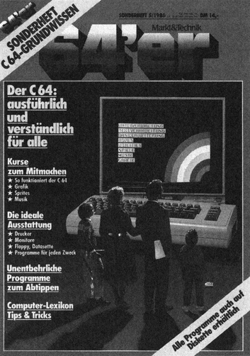

Lust statt Frust

Es kribbelt Ihnen in den Fingern. Der Herzschlag hat sich um einige Takte erhöht, die Handflächen sind feucht und leicht nervös öffnen Sie die Verpackung Ihres neuen C 64. Lange genug haben Sie die Computerszene beobachtet. Die Entscheidung, sich einen C 64 zu kaufen, fiel Ihnen deshalb auch nicht besonders schwer. Kein Wunder, denn jeder spricht von ihm. Ihr Freund, Ihr Kollege oder, wenn Sie Schüler sind, garantiert eine Handvoll Mitschüler schwärmt schon lange von »seinem« Computer. Stolz erzählen sie, was sie schon alles gemacht haben. Sie sind begeistert von den Spielen, von den grafischen Möglichkeiten. Der Sound, die Musik, die dem C 64 entlockt werden kann, findet begeisterte Zuhörer.
Als frischgebackener Computerbesitzer lassen Sie sich sicherlich gerne von soviel Enthusiasmus anstecken. Ihre ersten Programmierversuche, ähnliche Ergebnisse auf Ihrem C 64 zu zaubern, dürften jedoch nicht so besonders überzeugend sein. Woran liegt's? Vielleicht sind Sie der Werbung auf den Leim gegangen, die behauptet, »computern« sei eine der einfachsten Sachen auf der Welt, alles laufe sozusagen von selbst. In Wirklichkeit ist die Arbeit mit einem Computer jedoch eine zeitraubende Angelegenheit. Erfolge müssen hart erkämpft werden. Dagegen sind wirkliche Mißerfolge so gut wie ausgeschlossen. Und das macht das Hobby programmieren so unwahrscheinlich interessant. Wenn Sie am Anfang noch nicht einmal wissen, wie man einen Text wie gewünscht auf den Bildschirm bringt, so ist diese Aufgabe nach wenigen Stunden schon längst Routine geworden und Sie stehen bereits vor neuen Problemen. Aber auch diese werden meistens gelöst. Und wenn nicht, dann gibt es ja noch so viel zu entdecken und zu versuchen. Dieses Spielchen setzt sich fort, auch wenn Sie schon längst Profi sind.
Nun brauchen Sie jedoch das Rad nicht noch einmal zu erfinden. Wir wissen aus eigener Erfahrung, daß es manchmal nur an der mangelnden Information liegt, wenn bestimmte Probleme nicht gelöst werden können. Aus diesem Grunde haben wir ein Sonderheft zusammengestellt, in dem gerade Sie als Einsteiger genau das Grundwissen erhalten, das Sie brauchen. Den Computer, also Ihren C 64, kennenzulernen, bedeutet nicht nur zu wissen, wie man programmiert, sondern es erleichtert Ihnen das Verständnis erheblich, wenn Sie auch wissen, wie er funktioniert. Deshalb sollten Sie mit uns eine Exkursion durch den C 64 machen. Wir erklären Ihnen, wie der Speicher, das Gedächtnis, aufgebaut ist und stellen Ihnen die wichtigsten Begriffe vor, mit denen Sie immer wieder zu tun haben werden, die andere benutzen, als hätten sie diese schon in der Wiege gelernt.
Vielleicht haben Sie sich schon gewundert, wozu die verschiedenen Anschlüsse des Commodore eingesetzt werden können. Bei dem seriellen Port dürfte es keine Probleme geben, er ist für den Anschluß eines Druckers oder des Diskettenlaufwerks notwendig. Auch der Joystick-Port und der Kassettenport lassen wenig Fragen aufkommen. Anders sieht es schon bei dem User- und dem Expansions-Port aus. Was mit ihnen gemacht werden kann, erfahren Sie im Artikel über die Ports des C 64.
Obwohl der vorhin erwähnte serielle Port selbst wenig Überraschungen bietet, so haben es die Geräte, die daran anzuschließen sind, in sich. Das Diskettenlaufwerk zum Speichern von Programmen und Daten, manchmal auch nur kurz »Floppy« genannt, ist neben dem Drucker wohl die interessanteste Erweiterung Ihres C 64. Wir erklären Ihnen, was es damit auf sich hat, zu welchen Leistungen die Floppy fähig ist und wie Daten gespeichert werden.
Sind Sie etwa der Meinung, daß Sie auch ohne Drucker auskommen? Dann stellen Sie sich diese Frage doch in einigen Wochen oder Monaten noch einmal. Garantiert haben Sie dann eine 180-Grad-Wendung vollzogen. Kann man auf das Diskettenlaufwerk zu Gunsten der Datasette (vorläufig) noch verzichten, so wird der Wunsch nach einem Drucker bald übermächtig. Damit Sie beim Kauf keine Fehlentscheidung treffen, sollten Sie auf unsere jahrelange Erfahrung zurückgreifen. Wir stellen Ihnen die verbreitetsten und für Sie besten Drucker vor, für jeden Geldbeutel und für jeden Zweck. Mit unseren Empfehlungen können Sie eigentlich nichts mehr falsch machen.
Programmieren ist ein Zauberwort. Es bedeutet Entspannung, Spaß, Erfolgserlebnisse, Spiel und Spannung. Doch aller Anfang ist schwer. Deshalb führen wir Sie ganz behutsam und ausführlich in die Basic-Programmierung ein. Ein Kurs zum Mitmachen, mit vielen Tips und Tricks. Auch wenn Ihnen noch viele Basic-Befehle unklar sind, hier bekommen Sie Durchblick und verlieren die Scheu vor Fehlern. Nicht daß Sie jetzt denken, Sie könnten anschließend fehlerfrei programmieren, das kann keiner. Sie werden es bei jedem Programm merken, der C 64 ist kleinlicher, als es ein Mensch je sein wird. Die Fehlermeldungen, die er dann auswirft, lassen auch oft zu wünschen übrig. Doch auch hier helfen wir Ihnen weiter. Im Artikel »Mein Computer versteht mich nicht« erklären wir jede Fehlermeldung des C 64, beschreiben die Ursache und wie man den Fehler findet und behebt. Selbst für fortgeschrittene Programmierer gibt es einige verblüffende Erkenntnisse.
Gehört die Tätigkeit Programmieren auch zu den angenehmsten Beschäftigungen eines C 64-Besitzers, so brauchen Sie dennoch einige wichtige Hilfsprogramme, die Ihnen bei der Arbeit helfen und sie erleichtern. Die wichtigsten haben wir für Sie zusammengestellt: ein Kopierprogramm für Datasette und Diskette, Hypra-Load und Turbotape, die die Arbeit mit dem Diskettenlaufwerk und der Datasette erheblich beschleunigen und ein Sprite-Editor, mit dem Sie sehr einfach Sprites erstellen können.
Versäumen Sie auf keinen Fall, sich die »Fragen & Antworten« durchzulesen. Auf acht Seiten haben wir die wichtigsten und am häufigsten gestellten Fragen beantwortet. Eine Fundgrube für jeden Programmierer und C 64-Besitzer. Das gilt übrigens auch für die »PEEK-, POKE- und SYS-Kiste« sowie, last not least, für die vielen »Tips & Tricks für Einsteiger«. Wir hoffen, Ihnen mit diesem Sonderheft eine wichtige und interessante Hilfe in die Hand zu geben.
(Georg Klinge)